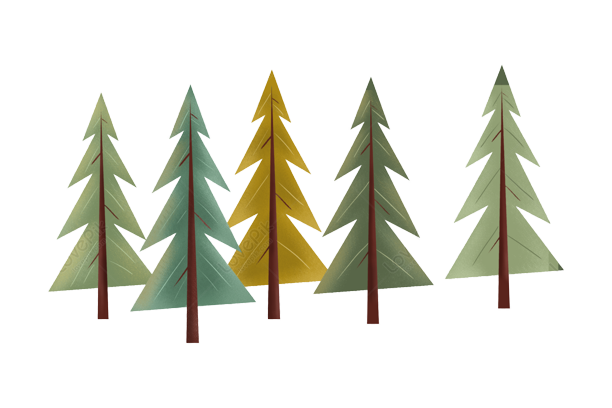
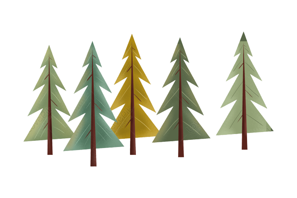
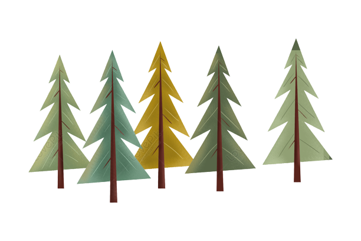
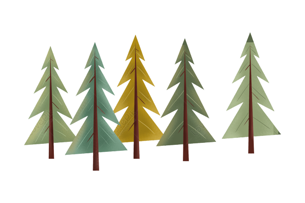

the Best of Nature ,
and Culture in the ,
Heart of the Countryside
 

Welcome to our eco-tourism website, where we offer unforgettable experiences that connect travelers to the natural world while promoting sustainability and conservation efforts.
Our mission is to provide responsible and ethical travel options that benefit local communities and the environment.Our tours are designed to immerse you in the beauty of nature
while also educating you on the importance of preserving it. From exploring pristine rainforests to witnessing rare wildlife sightings, our itineraries are carefully crafted to
showcase the natural wonders of each destination.We work closely with local communities to create responsible tourism initiatives that benefit both visitors and residents.
By supporting local businesses and investing in conservation efforts, we aim to create a positive impact on the environment and the people who call these places home.
Our experienced guides are knowledgeable about the ecosystems we explore and are dedicated to ensuring a safe and enjoyable experience for all travelers.
Whether you're an avid adventurer or simply looking to disconnect and recharge in nature, we have a tour that will suit your interests and preferences.
Join us on an eco-tourism adventure and discover the beauty and diversity of the natural world while supporting sustainable travel practices.
Let us help you create lasting memories while making a positive impact on the environment and the communities you visit.,
Welcome to our countryside village website, where we invite you to experience the charm and tranquility of rural life. Nestled among rolling hills and picturesque landscapes,
our village is a hidden gem that offers a unique and authentic glimpse into local culture and traditions.As you wander through the village, you'll be captivated by the stunning
views, quaint cottages, and friendly locals who are always eager to share their stories and traditions. Whether you're interested in history, culture, or outdoor adventures, our
village has something for everyone.Take a stroll through our lush countryside, where you can enjoy the fresh air and scenic beauty while exploring hiking trails, cycling routes,
and quaint country lanes. Relax and unwind in one of our local pubs or cafes, where you can savor traditional cuisine made with locally sourced ingredients.Our village is steeped
in history, and we invite you to explore the past through our historic landmarks and museums. Discover the stories of our ancestors and learn about the customs and traditions that
have shaped our community over the centuries.We take pride in our village's sustainable practices, and we work hard to preserve our natural environment and protect our local wildlife.
We are committed to promoting responsible tourism that supports our community's wellbeing and economic development while minimizing our impact on the environment.
Whether you're looking for a peaceful retreat, a family-friendly holiday, or an adventure-filled getaway, our countryside village has something for everyone.
We invite you to come and experience the beauty and tranquility of rural life and create lasting memories that will stay with you forever.